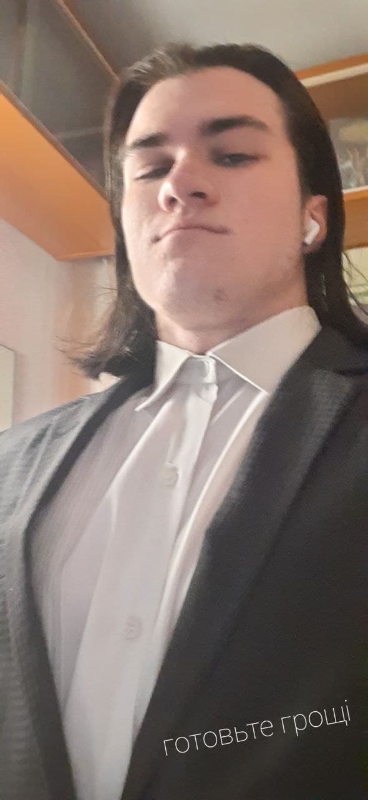

MAIN INFO:
The main reason why he is here is because Peter helped me a lot to find myself in this direction.
Peter was born on the 28th of January somewhere in wasteland. The ground was shaking and planets around were collapsing but he survived and built a town called "Petrozdansk". Thousands of years later he finally found me.
Full Name: Peter Minailuk
City: Mykolaiv
Age: Nobody knows
Religion: Petrozdanstvo
Name: Danila
Age: 20
Homecity: Moscow
Profession: IT Developer
Just a simple guy from Moscow who is trying to live this life. He
was born on the 29th of August somewhere in Lefortovo, Moscow.
During his childhood he figured out that the world is cruel and
nobody will help him to become rich and successful. Danila had a
friend Petro who once told him: "Buddy, you have to do the same sh*t
I do" — this is how it started. Luckily, Danila taught English in
online-school and saved some money for Elbrus Bootcamp — this is how
it continued.
To be continued...